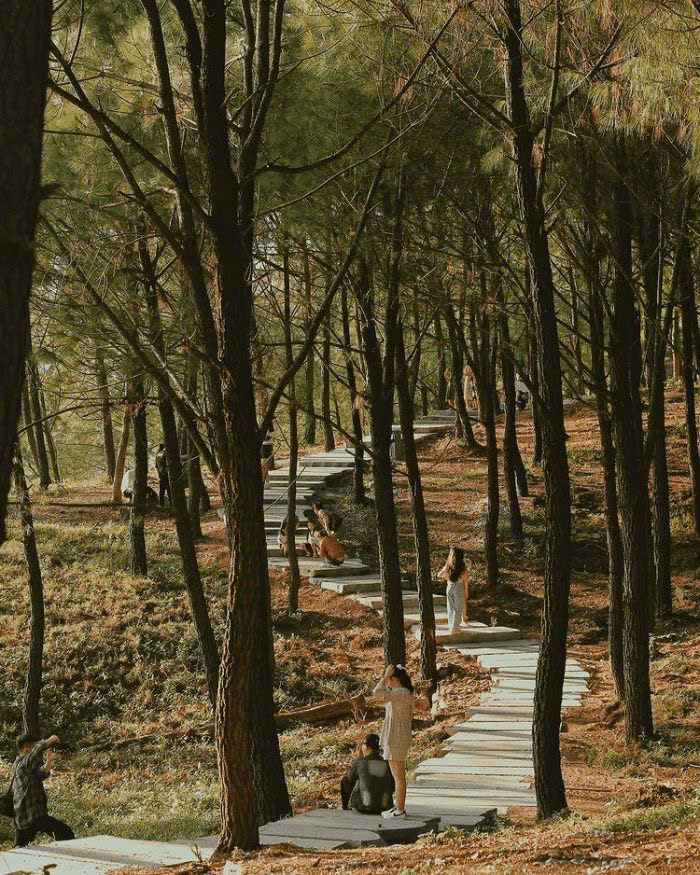

Đồi Vọng Cảnh
⭐ 4.6 / 5
📍 Địa chỉ: Phường Thuỷ Xuân, TP Huế
🕒 Giờ mở cửa: Cả ngày
🎫 Giá vé: Miễn phí
📖 Giới thiệu
Đồi Vọng Cảnh là địa điểm ngắm cảnh nổi tiếng của Huế, nằm bên bờ sông Hương. Từ trên đồi, du khách có thể phóng tầm mắt ngắm toàn cảnh sông Hương uốn lượn, núi non xa xa và vẻ đẹp thơ mộng của xứ Huế.
Nơi đây từng là điểm dừng chân của vua chúa triều Nguyễn mỗi khi du ngoạn. Hiện nay, đồi Vọng Cảnh là nơi lý tưởng để thư giãn, ngắm hoàng hôn và tận hưởng không khí trong lành.
⚠️ Lưu ý
👟 Nên mang giày dễ đi bộ.
🚯 Giữ vệ sinh môi trường.
🌤️ Nên đi chiều mát để ngắm cảnh đẹp hơn.
📷 Cẩn thận khi đứng gần mép đồi.
🏯 Điểm nổi bật
● Toàn cảnh sông Hương: Vẻ đẹp thơ mộng đặc trưng Huế.
● Rừng thông xanh mát: Không khí dễ chịu quanh năm.
● Điểm ngắm hoàng hôn đẹp: Rất được yêu thích.
● Không gian yên tĩnh: Thích hợp thư giãn.
📸 Gợi ý tham quan
● Đến vào chiều muộn để ngắm hoàng hôn.
● Chụp ảnh toàn cảnh sông Hương từ trên cao.
● Kết hợp tham quan lăng Tự Đức gần đó.
● Mang theo nước uống khi leo đồi.